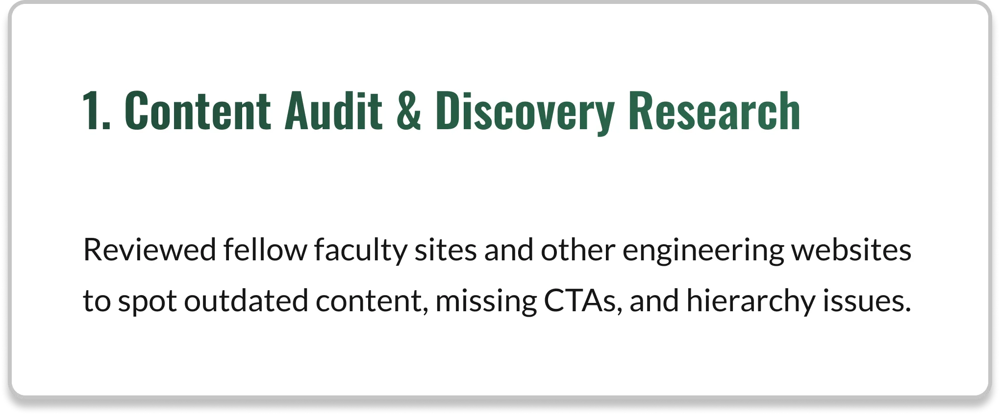
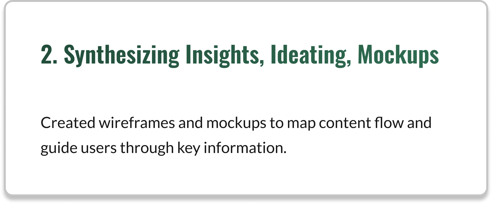
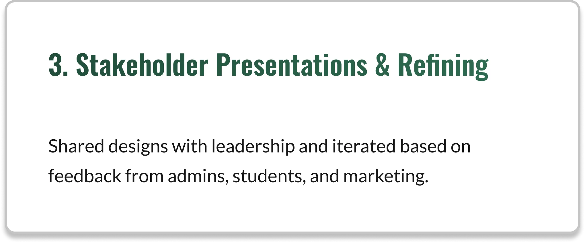
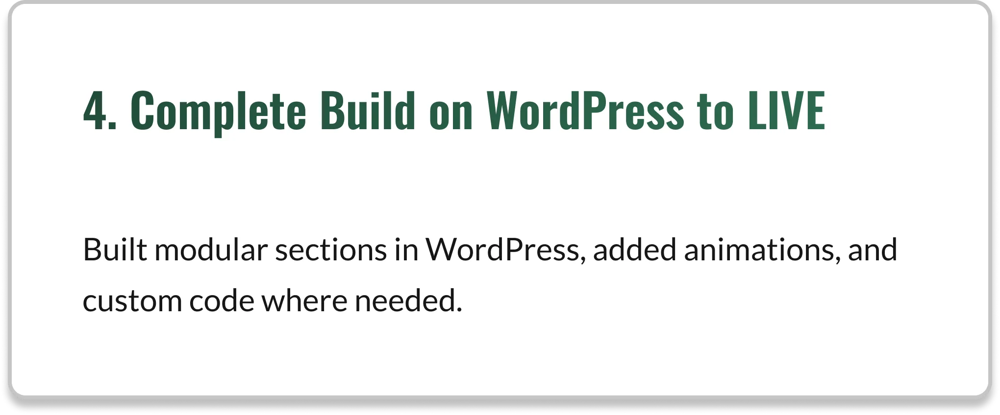

Summary:
Case study detailing the ECE homepage redesign, focused on rebuilding the information hierarchy to engage students.
Jump to Section
Use these to jump to a section you are interested in:
The ECE department wanted a homepage that could engage with prospective students while accurately reflecting its identity.
Previous content was outdated.
Students struggled to find programs, events, or co-op opportunities, which I addressed across the homepage and related pages like Events and Industry Opportunities.
The homepage needed to be aligned closer with university branding.
I led the redesign, improving information flow and accessibility across the homepage and related student engagement pages.
Disclaimer:
As this public website continues to evolve, the page may differ from the versions shown.
I have since left the organization, and any updates made thereafter are at their discretion.
My Process
The homepage required a redesign to modernize its structure, improve content visibility, and introduce interactive features. I started with a content audit and secondary research.




Designing the Homepage Narrative
Collaborated with department admins and stakeholders from co-op, undergraduate, graduate, and events teams to
define the homepage structure and Content Architecture, shaping it as an "Access Hub".
Most key design decisions were guided by stakeholder queries and requests.
The site needed to serve students while being represented, managed, and maintained by staff.
Key discussions that steered the Narrative
"We've been asked to make a few more (content) changes (to the homepage)... here's a link to (what) we're looking (for)."
From the Admin.
"Can we also replace the background photo (for the hero banner, regularly)?"
from the Marketing Team regarding post-build processes for updating the homepage.
"Not sure what (the button should) lead out to..."
Discussions regarding content architecture and where each section linked to.
Here's what the page looked like before I worked on it:
Content Architecture
Key homepage sections:
Each homepage section was designed modularly, allowing updates to research/program information,
images, or content without affecting the rest of the layout, ensuring long-term accessibility and usability.
1. Hero Section → Highlights departmental identity and key resources
2. Programs → Showcases undergraduate and graduate programs
3. Events → Provides easy access to student life information (Originally the Hear from the Chair section)
4. Research & Industry Opportunities → Connects prospective students and partners to research opportunities
The Events section initially only featured a message from the Department Chair,
and I later updated it to include an events calendar and linked it to the Events page I created, improving student access to upcoming events.
Core Design decisions and tradeoffs
Faster Time-to-Value
for first-time users over information density to accelerate user orientation
Clear Primary User
Positioned prospective students as the Primary user segment over researchers, faculty, and partners for better acquisition
Lower Cognitive Load
and vertical scroll over immediate discoverability in favor of progressive disclosure
UI Design: Exploring the Page's Sections
Click through each tab to see designs.
Hero Section
Prospective students and partners need to quickly understand the department’s identity and access key resources.
The hero section communicates departmental identity visually and highlights campaigns.
Key statistics reinforce credibility and showcase achievements.
A resources bar improves navigation to top content: News*, Faculty, Teaching Labs, and Events*.
* Pages I built
Pictured below: What it looked Like(L) and What I Proposed(R)
Pictured below: Approved High Fidelity Wireframe for Initial Go-Live(L) and Iterative Change Post Go-Live(R)
Programs Section
Students need an engaging way to explore undergraduate and graduate programs.
Modular cards highlight each program with images and CTAs, guiding students to detailed program pages.
The design replaces dense text with scannable cards, making information easier to absorb and action-oriented
Pictured below: What it looked Like(L) and What I Proposed(R)
Pictured below: Approved High Fidelity Wireframe for Initial Go-Live(L) and Iterative Change Post Go-Live(R)
Research & Industry Section
Students and industry partners need a clear way to discover Research Opportunities and Industry Opportunities*.
This was a critical information architecture decision: eliminating eight redundant links and consolidating content.
Two modular cards consolidate information, eliminating redundancy and providing clear actions.
The section makes it easier for visitors to access relevant research and partnership opportunities.
* Pages I built
Pictured below: What it looked Like(L) and What I Proposed(R)
Pictured below: Approved High Fidelity Wireframe for Initial Go-Live(L) and Iterative Change Post Go-Live(R)
What We Didn't Do
Introduce, Not Discover
Focused on Introduction, Not Intentionally treated discovery as task for the secondary pages.
No Legacy Content
Did not preserve legacy content. Exception: "Hear from the Chair," was combined with Events.
Not a Neutral Index
Avoided to prevent dilution of the primary user journey: Prospective student discovering the department.
Implementation using the CMS
“(Department Chair) signed off on the design. She's a fan!”
Building it out on WordPress, I ensured the homepage now communicates the department’s identity while providing access to programs, events, and research opportunities.
Content and structure guide students through the site, reinforcing credibility and engagement.
The design remains functional and adaptable, ensuring long-term value for both the department and students.
Disclaimer:
As the public website evolves, the live page may differ from the versions shown in this case study.
I also added UI animations.
Click on the images below to view the intially approved mockups.
Low Fidelity Mockup
High Fidelity Mockup
What I Learned
This project required rethinking and refining the homepage to focus on the primary audience: prospective students.
Prioritizing this audience justifies design decisions and requires being unable to do some things, but, It prevents content dilution while providing clear direction.
Every homepage component must justify its existence through user decision-making.
For example, eight buttons previously leading to the Research page were consolidated into Two buttons directing users to the Research page and the Industry Opportunities page (which I built).
While this primarily benefits the department through sponsorship visibility, I learned that students also perceive it as a signal that the department invests in their success.
Even features not directly targeting them can enhance their experience when thoughtfully integrated.
Institutional websites require designing for maintainability as much as for users.
Multiple admins with varied responsibilities need to update programs, admissions related details, or course information quickly.
For the homepage specifically, the Hero needed to be updated regularly to showcase the newest events and student opportunities the department organized such as Industry seminars and Co-Op Talks.
Ensuring ease of updates was a priority to prevent delays that could impact students’ education.


.png)